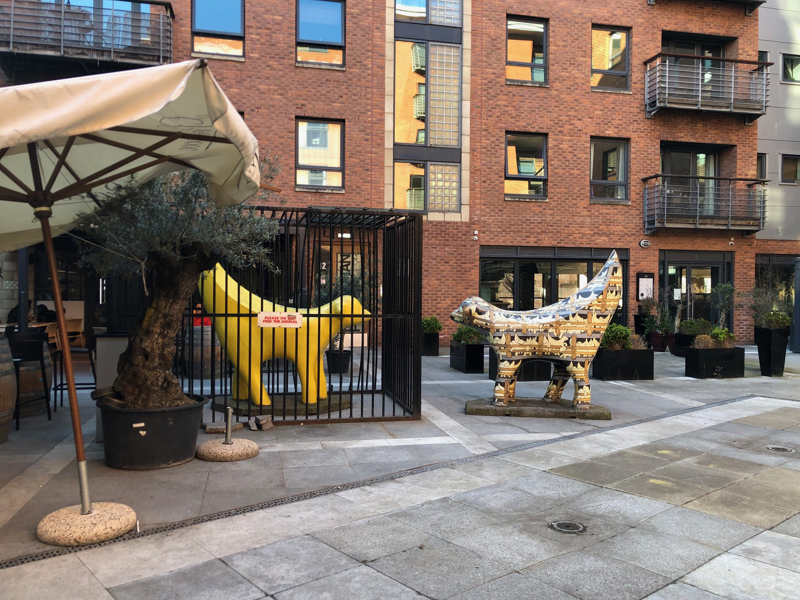

Photos
Royal Albert Dock
Royal Albert Dock

Le Royal Albert Dock est un célèbre quai situé à Liverpool, en Angleterre. Il a été inauguré en 1846 par le Prince Albert, époux de la reine Victoria, et est depuis devenu l'un des symboles les plus emblématiques de la ville. Le quai a été conçu par l'ingénieur Jesse Hartley et était à l'origine utilisé pour le commerce maritime, notamment pour l'importation de coton, de tabac et de sucre. Au fil du temps, le quai est devenu le centre névralgique du commerce de Liverpool et a été agrandi à plusieurs reprises pour répondre aux besoins croissants de la ville. Aujourd'hui, le Royal Albert Dock a été transformé en un complexe touristique de premier plan, offrant une multitude de restaurants, de boutiques, de galeries d'art, de musées et d'autres attractions culturelles. Parmi les attractions les plus populaires figurent le musée Beatles Story, qui retrace l'histoire du célèbre groupe de rock de Liverpool, ainsi que le Tate Liverpool, qui présente des expositions d'art moderne et contemporain.
Royal Liver Building
Royal Liver Building

Le Royal Liver Building est un bâtiment emblématique situé sur les rives de la rivière Mersey à Liverpool, en Angleterre. Il a été conçu par les architectes Walter Aubrey Thomas et Arnold Thornely et a été construit entre 1908 et 1911. Il s'agit d'un exemple remarquable de l'architecture édouardienne et il est devenu un symbole de la ville de Liverpool. Le Royal Liver Building est célèbre pour ses deux tours, qui abritent chacune une horloge de quatre mètres de diamètre. Les horloges sont connues sous le nom de « Liver Birds », des créatures mythiques de la légende scandinave qui sont censées protéger la ville et ses habitants. Les deux Liver Birds sont en cuivre, mesurent six mètres de haut et pèsent chacune près de huit tonnes. Le bâtiment a été rénové à plusieurs reprises au fil des ans, pour le maintenir à jour et le préserver. En 1953, les tours ont été équipées d'un système d'éclairage qui permet de les illuminer la nuit. En 2019, une rénovation de 5 ans a été achevée pour moderniser le bâtiment et le rendre plus éco-énergétique. Le Royal Liver Building a également été présenté dans les films de Batman, notamment dans le film de 1989 réalisé par Tim Burton. Dans ce film, le bâtiment apparaît sous les traits de la tour de Gotham City, le siège du milliardaire et ennemi juré de Batman, Bruce Wayne. Depuis lors, le Royal Liver Building est devenu un lieu de pèlerinage pour les fans de Batman et est souvent utilisé comme toile de fond pour des photos de tourisme ou de cosplay. La tour est également devenue un symbole de la culture populaire et un élément emblématique de l'univers cinématographique de Batman.
Musée des Beatles
Musée des Beatles
Le musée des Beatles, également connu sous le nom de The Beatles Story, est un musée dédié au groupe de musique britannique légendaire, les Beatles, situé à Liverpool, en Angleterre. Le musée a ouvert ses portes en 1990 pour célébrer le 50ème anniversaire de la naissance de John Lennon et est depuis devenu une attraction touristique majeure de la ville. Le musée est situé sur Albert Dock, un site du patrimoine mondial de l'UNESCO, et est réparti sur deux sites différents, le premier étant le musée principal et le second étant le site de débarquement de ferry. Le musée principal est une exposition immersive qui retrace l'histoire du groupe, depuis leur formation à Liverpool en 1960 jusqu'à leur dissolution en 1970. Le musée comprend une collection impressionnante d'objets liés aux Beatles, notamment des instruments de musique, des vêtements, des photographies, des films et des enregistrements audio. Les visiteurs peuvent également découvrir des reconstitutions de lieux emblématiques tels que l'appartement de John Lennon et Yoko Ono à New York, ainsi qu'une reproduction du Cavern Club, où les Beatles ont joué plus de 300 fois dans les années 60. Le site de débarquement de ferry est un musée plus petit qui se concentre sur les débuts des Beatles à Liverpool et leur ascension vers la célébrité. Les visiteurs peuvent découvrir des expositions interactives, des films et des enregistrements audio qui illustrent les racines du groupe dans la ville de Liverpool. Le musée des Beatles est une attraction majeure pour les fans de musique et les amateurs de culture populaire du monde entier. Il est estimé que plus de deux millions de personnes visitent le musée chaque année, ce qui en fait l'une des attractions touristiques les plus populaires de Liverpool.
La cathedrale de Liverpool
La cathedrale de Liverpool

La cathédrale de Liverpool, également connue sous le nom de cathédrale de Christ the King, est une cathédrale anglicane située dans la ville de Liverpool, en Angleterre. Elle est l'un des bâtiments les plus emblématiques de la ville et est considérée comme l'une des plus grandes cathédrales du monde. La construction de la cathédrale a commencé en 1904, mais a été interrompue par la Première Guerre mondiale. La construction a repris dans les années 1920 et a été achevée en 1978, soit plus de 70 ans après le début du projet. La cathédrale a été conçue par l'architecte britannique Sir Giles Gilbert Scott, qui est également connu pour avoir conçu les célèbres cabines téléphoniques rouges de Londres. La cathédrale de Liverpool est construite dans un style architectural gothique moderne, qui combine des éléments traditionnels du style gothique avec une touche moderne. La cathédrale est célèbre pour sa tour unique de 101 mètres de haut, qui domine le paysage de Liverpool. L'intérieur de la cathédrale est tout aussi impressionnant que l'extérieur. Les visiteurs peuvent admirer les vitraux colorés, les sculptures et les mosaïques qui ornent les murs de la cathédrale. L'une des caractéristiques les plus célèbres de la cathédrale est son grand orgue, qui est l'un des plus grands instruments de musique d'église au monde. La cathédrale de Liverpool est un lieu de culte actif et accueille de nombreux services religieux tout au long de l'année. Elle est également un lieu de tourisme majeur et attire des milliers de visiteurs chaque année. La cathédrale abrite également un café, une boutique de souvenirs et un centre d'information pour les visiteurs.
Superlambanana
Superlambanana

Le Superlambanana est une sculpture emblématique située à Liverpool, en Angleterre. Créée en 1998 par l'artiste japonais Taro Chiezo, elle est devenue une attraction populaire pour les habitants et les touristes de la ville. La sculpture est une représentation hybride d'un mouton et d'une banane, mesurant environ 17 pieds de haut et pesant environ 8 tonnes. Le mouton fait référence à l'importance historique de l'industrie de la laine à Liverpool, tandis que la banane représente l'histoire commerciale de la ville en tant que port important pour les fruits et légumes. Le Superlambanana a été initialement créé comme une installation temporaire pour une exposition d'art public à Liverpool en 1998, mais il est rapidement devenu un symbole de la ville et a été conservé en permanence. Depuis lors, il est devenu l'une des attractions les plus photographiées de Liverpool, avec des versions en miniature vendues dans les boutiques de souvenirs de la ville. Malgré les critiques, le Superlambanana continue d'être une attraction populaire à Liverpool, attirant des touristes du monde entier et représentant l'esprit créatif et ludique de la ville.